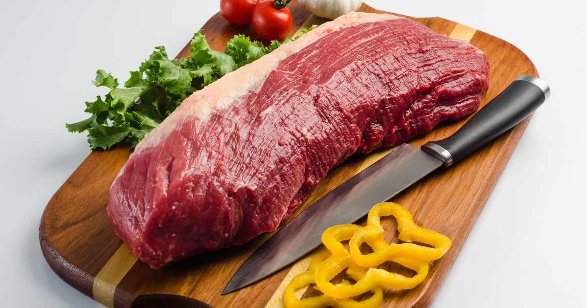

Mapa CarneCerta
Versatilidade para assados, panelas e pratos tradicionais
O lagarto é um corte com ótimo rendimento, boa resposta em cozimento e bastante presença em receitas clássicas.

Ideal para • assado • panela • cozido
Maciez
3/5
Equilibrada
Gordura
2/5
Moderada
Sabor
4/5
Marcante
Abrir recomendador inteligente
Lagarto
Corte pratico para quem procura sabor marcante, bom rendimento e varias formas de preparo.
O lagarto se destaca em preparos tradicionais, especialmente quando se deseja um corte com textura firme, sabor intenso e boa resposta em cozimentos mais longos.
Assado
Panela
Cozido
4.2
Corte versátil
Excelente para quem quer um corte com bom rendimento, sabor forte e boa adaptação entre assados e receitas de panela.
Ideal para
Dica do açougueiro IA
Para um resultado mais macio, cozinhe em temperatura controlada e deixe descansar antes de fatiar.